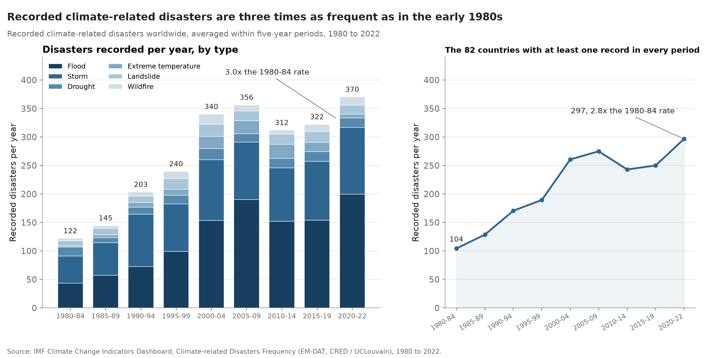
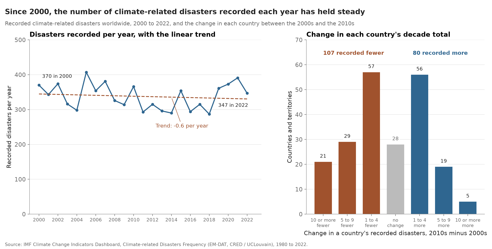

Proposition: Climate-related disasters are becoming more frequent.
We used data from the IMF Climate Change Indicators Dashboard to explore how recorded climate-related disasters (specifically floods, storms, droughts, extreme temperatures, landslides, and wildfires) have changed over time. The two visualizations use the same dataset to argue opposite sides of the proposition.
FOR the Proposition

Design decisions and rationale
Scores run from −2 (fully deceptive) to +2 (fully earnest). 0 is neutral.
- Averaged the counts within periods (score: −1). Each bar shows the mean number of records per year in that period instead of its total. Averaging makes the broad increase easier to follow and gives less attention to individual high and low years. Annual counts would also show that variation more clearly. We chose period means because they make the comparison with the early 1980s more immediate. The dip in the 2010s is still visible, so the chart does not show an uninterrupted rise. We scored this as mildly deceptive because smoothing helps the long-term increase dominate the more uneven recent pattern.
- Included 2020–22 as the last period (score: −1). This keeps the latest years in the table. Using a yearly mean makes its height comparable with the other bars but the same bar width makes three years look like another five-year period. Each year has more influence on this final average, which also supports the “three times” comparison. Ending at 2019 would give us only complete five-year periods, but leave out recent observations and produce a smaller increase. The dates are labeled but the unequal amount of data behind the bars is less apparent.
- Used stacked bars with a zero baseline (score: +1). The bar height shows the total, while the segments show how each disaster type contributes. Putting floods at the bottom gives that category a common baseline and makes its increase easy to compare across periods. The upper segments are harder to compare because their starting positions move. We chose the stack over a single total line to show what makes up the increase. The zero baseline preserves the meaning of bar length. The blue shades also keep the figure visually consistent, although their similarity makes some disaster types harder to distinguish. This limits how earnest we rate the overall choice.
- Compared a fixed group of 82 countries and territories (score: −1). For the right panel, we kept only places with at least one recorded disaster in every period and then recalculated the averages. The increase remains when the membership stays fixed which makes the supporting argument more convincing than the world totals alone. But this is a selected group, and having a record in every period does not establish consistent reporting within those places. The panel could look like a solution to reporting bias when it only addresses changing membership. Using all places in both panels would avoid that selection but would not give us this comparison.
- Framed the result as “three times" as frequent (score: −1.5). The title and annotation turn the comparison into a clear takeaway for the reader. Roughly 370 records per year in the last period, compared with only 122 in the first. The word “Recorded” narrows the claim but readers may still take it as a change in actual disaster frequency. EM-DAT actually warns against using pre-2000 records for trend analysis because reporting changed over time. A title about an increase in database records would be more careful but would argue the proposition less directly. The ratio is supported by the table. Interpreting it as a comparable measure of disasters across time is the misleading step.
AGAINST the Proposition

Design decisions and rationale
Scores run from −2 (fully deceptive) to +2 (fully earnest). 0 is neutral.
- Started the annual series in 2000 (score: +1). This window emphasizes the relatively level recent pattern and leaves out the earlier increase in records. There is a defensible reason for the cutoff. As mentioned earlier, EM-DAT recommends excluding pre-2000 observations from trend analyses because of reporting bias. Showing all years would provide more historical context but would not automatically make the comparison more reliable. We rate the cutoff as mostly earnest because it has that methodological basis. Still, the image gives the date without explaining why it matters and this shorter series cannot settle the proposition for every time period.
- Added a fitted linear trend (score: −0.5). The dashed least-squares line summarizes the annual counts with a small downward slope which supports the words “held steady” in the title. Its different color and dashed stroke distinguish it from the observed values which remain visible. However, one straight line summarizes the whole window with one slope and does not show changes in direction (including the rise near the end). A moving average would show those changes but would depend on the chosen averaging window. We kept the straight fit for a simple overall comparison. It is not a test establishing that the underlying frequency stayed constant.
- Used a vertical scale from zero to 500 (score: −0.5). This range places the annual changes in the context of the overall count which makes the line look fairly level. Unlike bars, a line chart does not need a zero baseline to encode its values correctly. A narrower scale could show the year-to-year variation more clearly. We chose the wider range because the overall level was the comparison we wanted readers to notice but it also makes the fluctuations less prominent. That persuasive effect is why we rate this choice as slightly deceptive rather than automatically fair because it starts at zero.
- Group countries by changes in decade totals (score: −1). We subtracted each country's 2000–09 total from its 2010–19 total, then grouped the differences into labeled ranges. The annotations emphasize that 107 places recorded fewer disasters compared with 80 that recorded more. Each place contributes one to its bar, so this answers how widespread the direction of change was, not how large the global change was. A small decline and a large decline both count toward the “107 recorded fewer” claim, and many declines were only a few records. Eleven of the 28 unchanged units have zero-filled totals in both decades (including former states), so “unchanged” does not necessarily mean observed stability. Comparing complete decades also leaves 2020–22 out of this panel. A plot of the change in the world total would answer a different question, while separate bars for every country would preserve more detail but would be harder to scan.
- Described the recent pattern as “held steady” (score: −0.5). The title directs attention to the nearly flat overall trend, and “since 2000” tells readers which years support that reading. The endpoint labels reinforce it by showing a slightly lower count at the end. A claim like "fluctuated without a clear overall increase” would better acknowledge the variation, but would make a less direct argument against the proposition. We kept “held steady” as the persuasive summary while recognizing that it sounds more conclusive than a descriptive fit alone can justify. Neither this title nor the chart establishes that disaster risk or severity stayed the same.
Final reflection
The long-term rise in the recorded counts made the supporting argument straightforward to present. The harder part was deciding what the opposing chart could reasonably claim. Starting in 2000 gives a much flatter overall pattern, but that does not mean the earlier records were simply inconvenient data to discard. Their reporting limitations matter too. The two figures made us look more closely at what we were comparing (averages across time, the same selected countries, and the number of countries whose totals changed). Those are related questions but they are not interchangeable. The fixed group was useful for holding membership constant. It was less useful for resolving the reporting problem than its placement next to the world totals might suggest.
What stood out was how much the argument changed without changing an individual count. Averaging made the supporting chart easier to read while the fitted line gave the opposing chart a simple summary. Both choices also made some variation less noticeable. The decade comparison added another shift where its bars count places, so a reader can see many declines without knowing their size. For us, ethical visualization means making those transformations and units clear enough that readers can judge the claim. Correct arithmetic is necessary but it does not make every comparison or headline well supported.
We would draw the boundary at whether a choice invites a conclusion the analysis cannot support. Using a clearer summary or a defensible time window can be reasonable. Letting a fixed group stand in for consistent reporting or treating a nearly flat fitted line as proof that nothing changed goes further than the data allow. The phrase “recorded disasters” helps but it cannot carry all of those qualifications by itself. These figures work as opposing arguments about the same table. Neither is enough to establish a change in actual disaster frequency on its own.